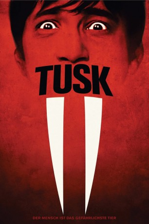

#8333 Tusk
 
 IMDB-Wertung: 5.4 / 10
IMDB-Wertung: 5.4 / 10  Tomatometer: 45
Tomatometer: 45  Metascore: 0
Metascore: 0 
Für seinen Podcast reist Wallace durch Amerika und trifft sich mit vielen interessanten Menschen, die ihm ihre Lebensgeschichte erzählen wollen. Eines Tages erhält er einen Brief von einem alten Seefahrer namens Howard Howe und Wallace folgt der Einladung des alten Mannes nach Kanada. Als er dort eintrifft, offenbart im Howard eine schier unglaubliche Geschichte. Noch bevor der Journalist seinen Tee austrinken kann, fällt er betäubt in Ohnmacht und wird von Howard auf dessen Anwesen festgehalten, um von diesem Stück für Stück transformiert zu werden - in ein Walross! Während dieser Zeit sorgen sich Wallace Freundin Ally und sein bester Freund Teddy um ihn und entschließen sich, seinem Verschwinden auf den Grund zu gehen.
Jahr: 2014
Dauer: 101 Minuten
FSK: 16
Land: USA Studio: A24Tonspuren: DTS - ,
Untertitel: Deutsch,
Auflösung: 1080p (1920x800) Größe: 4495 MB
Genre: Horror, Drama, Komödie
Regisseur:  Kevin Smith
Kevin Smith
Drehbuch: Kevin Smith
Soundtrack: Christopher Drake
Darsteller:
 Michael Parks als Howard Howe
Michael Parks als Howard Howe Justin Long als Wallace Bryton
Justin Long als Wallace Bryton Genesis Rodriguez als Ally Leon
Genesis Rodriguez als Ally Leon Haley Joel Osment als Teddy Craft
Haley Joel Osment als Teddy Craft Johnny Depp als Guy Lapointe
Johnny Depp als Guy Lapointe- Harley Morenstein als Border Agent
 Ralph Garman als Detective
Ralph Garman als Detective- Jennifer Schwalbach Smith als Gimli Slider Waitress
- Harley Quinn Smith als Girl Clerk #1
- Lily-Rose Depp als Girl Clerk #2
- Ashley Greene als Convenient Store Customer
- Matthew Shively als Young Howard Howe
- Brian Cole als Traveler (uncredited)
 Zak Knutson als Ernest Hemingway (uncredited)
Zak Knutson als Ernest Hemingway (uncredited) Scott Mosier als Himself (uncredited)
Scott Mosier als Himself (uncredited)- Josh Roush als Bar Patron 2 (uncredited)
- Douglas Banks als Kill Bill Kid
- Mitch Cleaver als Bar Patron (uncredited)
- Bonnie Cole als Traveler (uncredited)
- Todd Davis als Bar Customer (uncredited)
 Randy Grazio als Border Agent (uncredited)
Randy Grazio als Border Agent (uncredited)- Devin Walker als Man at the Funeral (uncredited)
Datei: X:\2014(N-Z)\Tusk (2014, FSK16, 1920x800).mkv seit 24.02.2018
Festplatte: HD 2013(I-Z)-2014(A-Z)
 Es gibt insgesamt 163 Filme in der Gruppe '2014(N-Z)'
Es gibt insgesamt 163 Filme in der Gruppe '2014(N-Z)'